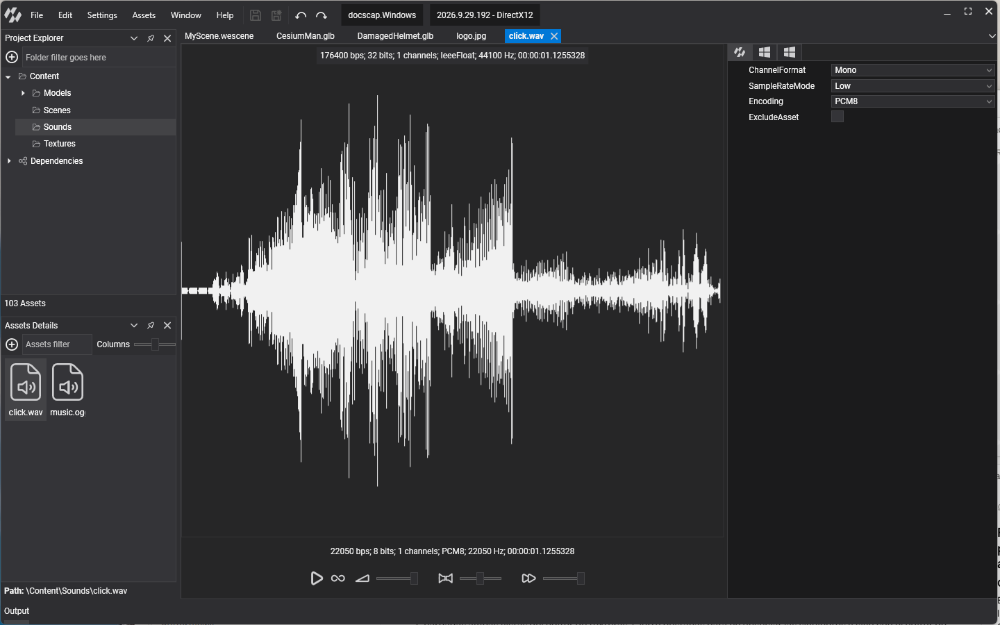

Audio Editor

The Audio Editor is where you listen to a sound asset and choose the format it is exported with. Double-click a sound asset in Assets Details to open it. The editor has two parts: the viewport, with the waveform and a playback toolbox, and the properties panel, with the asset profiles.
Viewport
The viewport draws the waveform of the audio. The line at the top describes the original file: bit rate, bits per sample, channels, encoding, sample rate and duration. The line above the toolbox describes the exported asset as the current profile produces it, so you can see the effect of a profile change straight away.
The toolbox plays the exported asset:
| Icon | Control | Description |
|---|---|---|
| Play / Stop | Starts playback. Click again to stop. | |
| Loop | Plays the sound in a loop. | |
| Volume | Playback volume, from 0 to 100%. | |
| Pan | Moves the sound between the left (-100) and right (100) speakers. Double-click the slider to center it. | |
| Speed | Playback pitch and speed, from 10% to 100% of the original. |
Note
The toolbox settings are for listening only. They are not saved in the asset. To set the volume or pitch a sound plays at in your scene, use the properties of SoundEmitter3D or of an AudioSource.
Properties
The properties panel has one tab per profile. The first tab is the default profile, which every platform uses unless it has a profile of its own. Each remaining tab overrides the default for one platform, so you can, for example, export smaller 8-bit sounds for a mobile profile only.
These are the SoundProfile properties:
| Property | Default | Description |
|---|---|---|
| ChannelFormat | Mono |
Mono or Stereo. The audio is mixed down or up to this channel count on export. Sounds played by SoundEmitter3D must be Mono. |
| SampleRateMode | Low |
Low exports at 22050 Hz and High at 44100 Hz. A higher rate keeps more of the high frequencies but doubles the size of the data. |
| Encoding | PCM8 |
PCM8 stores 8 bits per sample and PCM16 16 bits. PCM16 has much less background noise, at twice the size. |
| ExcludeAsset | false | Leaves this asset out of the exported content for the profile, for sounds a platform never plays. |
SoundProfile also exposes a read-only Frequency value: the sample rate in hertz that the exporter uses, 22050 for Low and 44100 for High. At run time the same value appears as WaveFormat.SampleRate of the loaded AudioBuffer.
Tip
The defaults favour small files. For music, or for any sound where quality matters, set SampleRateMode to High and Encoding to PCM16.